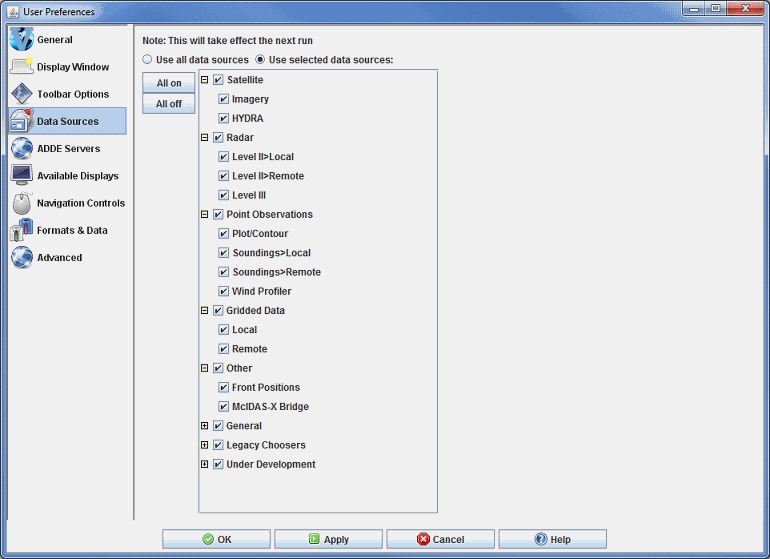

Data Sources Preferences
The User Preferences window is accessed in the Main Display window through the Edit->Preferences menu. The Data Sources tab allows the user to define what types of data
choosers to use. This is a way to simplify the Data Explorer window by only showing
the choosers that you want to use. Note that you must restart McIDAS-V for any changes made in this tab to take effect. The image below represents the default settings for the Toolbar Options tab, with all data sources turned on.

Image 1: Data Sources Preferences (Default)
Properties
- Use all data sources - Utilizes all data sources. This makes all choosers available in the Data Sources tab of the Data Explorer
- Use selected data sources - Utilizes only selected data sources. This allows the user to turn on or off individual data sources. Only data sources that are on will appear as choosers in the Data Sources tab of the Data Explorer.
-
 - Selects all data sources. This makes all choosers appear in the Data Sources tab of the Data Explorer.
- Selects all data sources. This makes all choosers appear in the Data Sources tab of the Data Explorer.
-
 - Unselects all data sources. This makes no choosers appear in the Data Sources tab of the Data Explorer.
- Unselects all data sources. This makes no choosers appear in the Data Sources tab of the Data Explorer.